A modern terminal-inspired theme for Obsidian. Not retro green-on-black nostalgia — a calm, dense, high-contrast working surface: graphite backgrounds, crisp typography, restrained ANSI-style accents, and readable code in both dark and light modes.
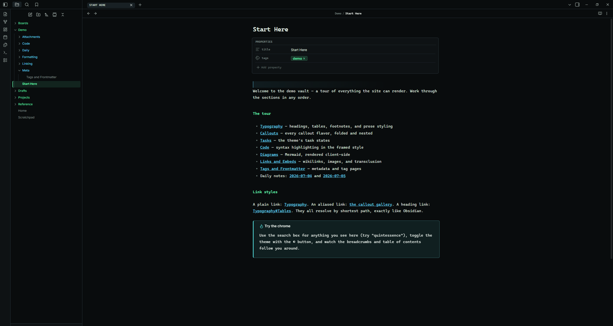
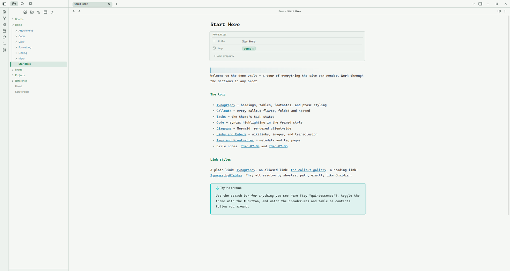
The same vault in both palettes — use the light mode switch above to compare.
Real captures from Obsidian, not mockups. Each piece of the reading experience gets deliberate, restrained styling.
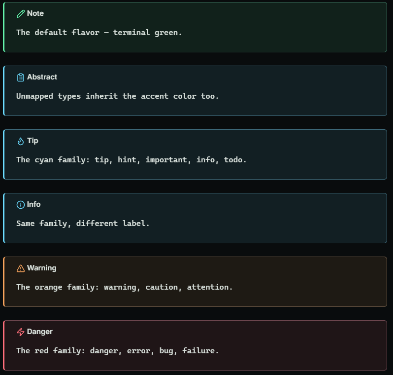
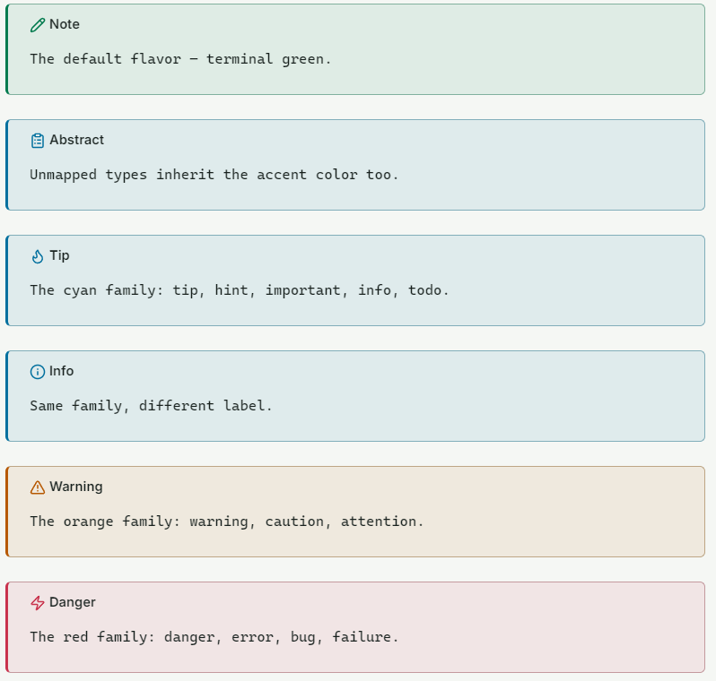
The whole family, each with a three-pixel top bar, a tinted fill, and the monospace manifest-label title. Unmapped types inherit the accent.
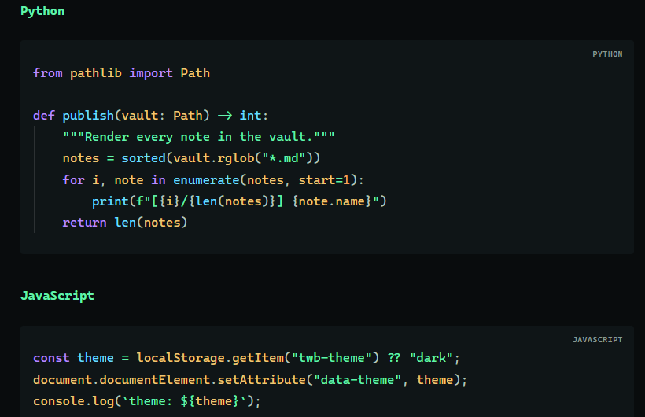
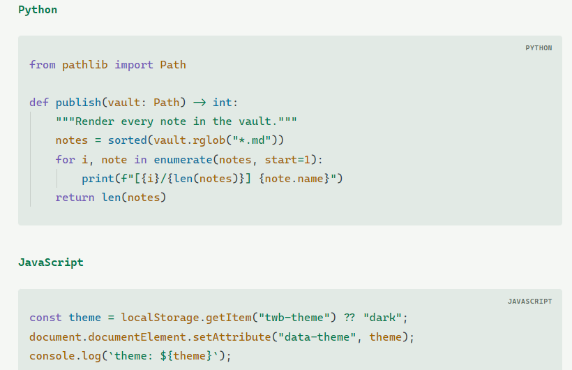
A header band with a language label, framed consistently across editing and reading views.
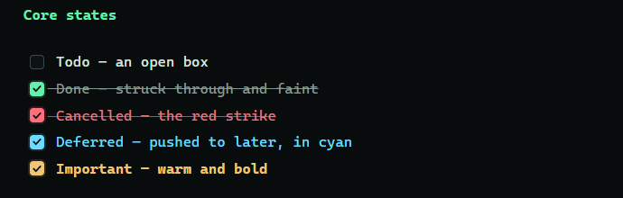
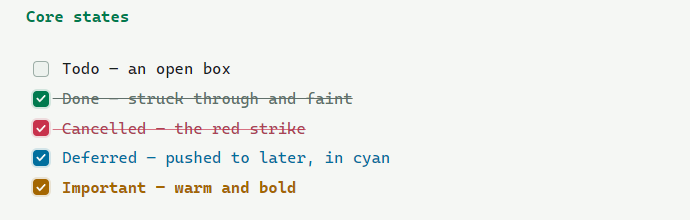
Done, cancelled, deferred, and important each get a distinct checkbox color and text treatment.
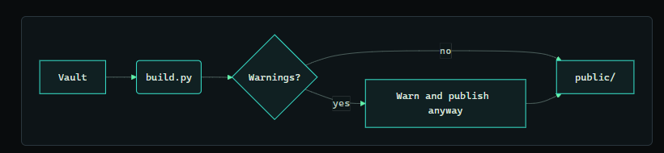
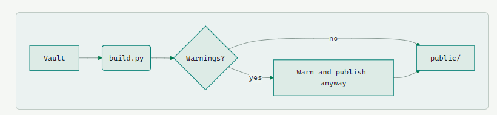
Mermaid flowchart, state, sequence, and class diagrams recolored to the theme palette.
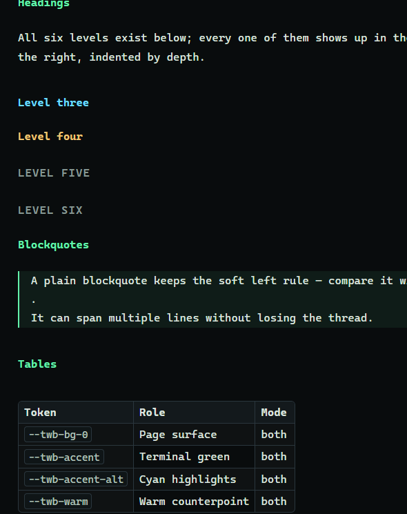
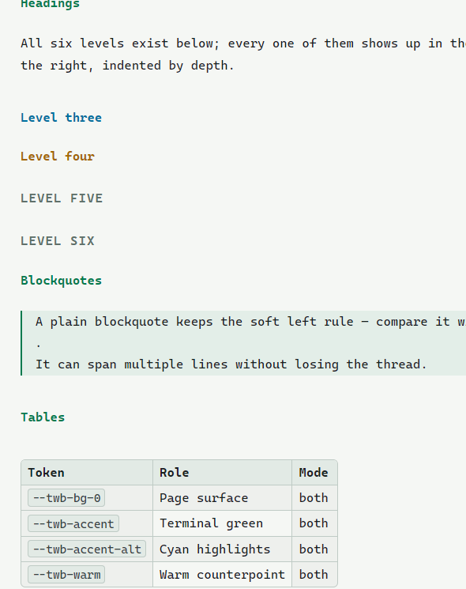
A colored heading hierarchy, hairline-framed tables, and prose tuned for long reading sessions.
Dark and light are separate palettes, not an inversion. These swatches come from the theme's actual tokens and follow the toggle.
Opinionated where it counts, quiet everywhere else — and it composes with your existing Obsidian setup instead of fighting it.
Monospace micro-labels unify properties, code headers, tab titles, and breadcrumbs into one system.
Optional folder coloring by nesting depth, with four configurable level colors and a file-name color.
Your accent color, interface / text / monospace fonts, and font size all flow through instead of being overridden.
Accents per mode, fonts, line width, radius, tag shape, line height, compact mode, and per-feature toggles.
Decorative bands and glyphs are stripped from PDF export, leaving clean printed pages.
CSS only, no network requests, no scripts — compliant with Obsidian's developer policies.
Settings → Appearance → Themes → Manage, then search Terminal Workbench and select Install and use.theme.css and manifest.json from the latest release into .obsidian/themes/Terminal Workbench/.1.5.0 or newer. For the tuning options, install the Style Settings plugin.